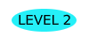
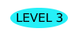

Level 1: Quarantined at home
Stay Home!
Staying home is the safest thing to do during this pandemic
Wash your hands consistently for 20 seconds
Don't host parties or invite outsiders to your house because they could bring in the virus
Everyone should wear a mask in public settings and when around people who don’t live in your household, especially when other social distancing measures are difficult to maintain
Remember that staying at home not only protects you but also those whom you love